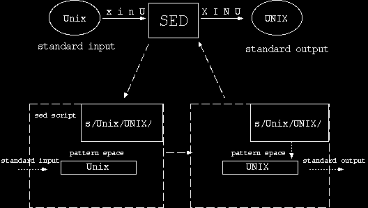

一般 sed 最常用在編輯那些需要不斷重覆某些編輯動作的文件上 , 例如將文件中的某個字串替換成另一個字串等等。這些相較於一般 UNIX 編輯器(交談式的, 如 vi、emacs)用手動的方式修改文件 , sed 用起來較省力。下面幾節將分別介紹:
再者 , 當文件需要許多不同編輯動作時 , 則 sed 一次可執行那些不同的編輯動作。例如 sed 能一次執行完將文件中所有空白行刪除、替換字串、並將使用者輸入的文字添加在文件的第六行等等不同的編輯動作。
1.2 何處獲得 sed
一般的 UNIX 系統 , 本身即附有 sed。不同的 UNIX 系統所附的 sed 版本亦不盡相同。若讀者所使用的 UNIX 系統上未附有 sed , 則可透過 anonymous ftp 到下列地方去取得 :
phi.sinica.edu.tw:/pub/GNU/gnu gete.sinica.edu.tw:/unix/gnu ftp.edu.tw:/UNIX/gnu ftp.csie.nctu.edu.tw:/pub/Unix/GNU ftp.fcu.edu.tw: /pub3/UNIX/gnu axp350.ncu.edu.tw:/Packages/gnu leica.ccu.edu.tw :/pub2/gnu mail.ncku.edu.tw :/pub/unix/gnu bbs.ccit.edu.tw :/pub1/UNIX/gnu prep.ai.mit.edu.tw:/pub/gnu
1.4 sed 如何工作
如同其它 UNIX 命令 , sed 由標準輸入讀入編輯文件並由標準輸出送出結果。下圖表示 sed 將資料行 "Unix" 替換成 "UNIX" ,

在圖中 , 上方 standard input 為標準輸入 , 是讀取資料之處 ; standard output 為標準輸出 , 是送出結果之處 ; 中間 sed 方塊的下面兩個虛線方塊表示 sed 的工作流程。其中 , 左邊虛線方塊表示 sed 將標準輸入資料置入 pattern space , 右邊虛線方塊表示 sed 將 pattern space 中編輯完畢後的資料送到標準輸出。
在虛線方塊中 , 兩個實線方塊分別表示 pattern space 與 sed script。其中 , pattern space 為一緩衝區 , 它是 sed 工作場所 ; 而 sed script 則表示一組執行的編輯指令。
在圖中, 左邊虛線方塊 "Unix" 由標準輸入置入 pattern space ; 接著 , 在右邊虛線方塊中 , sed 執行 sed script 中的編輯指令 s/Unix/UNIX/ (註解 [2]) , 結果 "Unix" 被替換成 "UNIX" , 之後 , "UNIX" 由 pattern space 送到標準輸出。
總合上述所言 , 當 sed 由標準輸入讀入一行資料並放入 pattern space 時 , sed 依照 sed script 的編輯指令逐一對 pattern space 內的資料執行編輯 , 之後 , 再由 pattern space 內的結果送到標準輸出 , 接著再將下一行資料讀入。如此重複執行上述動作 , 直至讀完所有資料行為止。